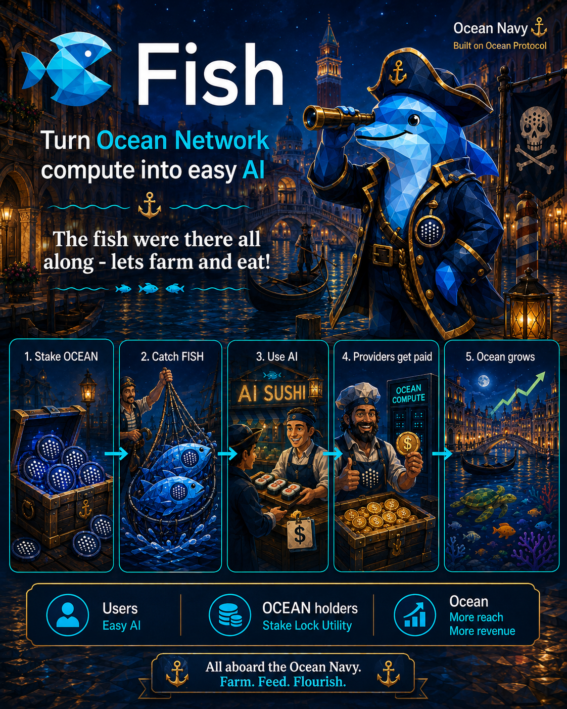

Stake OCEAN
OCEAN can create access.
Ocean Navy · built on Ocean Protocol
The fish were there all along — let’s farm and eat
A simple AI product layer that routes demand to Ocean Network providers.

ELI5
Five steps. No raw marketplace for users.
OCEAN can create access.
Credits become usable.
Users buy simple AI.
Compute earns money.
More use. More value.
Users buy AI · Providers get paid · OCEAN gains utility
Easy AI
One app/API, private open AI, no provider hassle.
Stake. Lock. Utility.
OCEAN can earn credits, back providers, and reduce liquid supply.
More reach. More revenue.
More users, provider demand, and usage proof.
Market-making first
Start by measuring compute supply, provider availability, and pricing.
GPU supply
—Available now
—Providers
—H200 from
—Ocean-native jobs
—Provider payouts
—| GPU | Total | Available | Lowest $/hr |
|---|
| Provider | Region | Available | Status |
|---|
Why holders should care
Holders can lock OCEAN to earn AI credits from funded budgets.
Providers can bond OCEAN to receive routed jobs.
Credits turn staked OCEAN into usable AI access.
Real margin can support reserves and possible buy/lock/burn later.
Roadmap
Fish builds the app/API, usage proof, staking credits, and provider economics before token promises.
Providers, developers, and OCEAN holders can help test the first product loop.